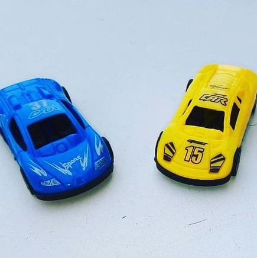
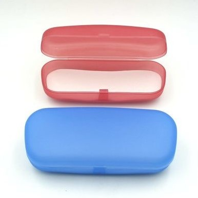
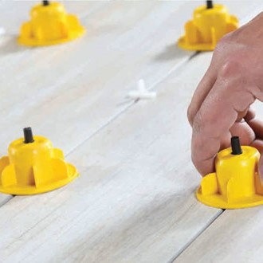
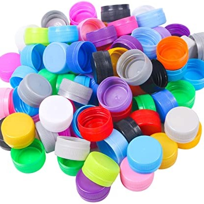

Somos una empresa con trayectoria pero en constante innovación para proveer siempre lo último en tecnología de inyección de plástico.
Creemos que la mejor manera de distinguirnos de la competencia es ofrecer un servicio de calidad, en un tiempo óptimo.
Nos encontramos en la ciudad de Luján, pero nuestros servicios llegan a diversas áreas de la provincia.
Ofrecemos servicios de inyección de plástico para terceros, fabricando productos de calidad.
   Contá con nosotros
- Inyectamos plástico para terceros.
- Trabajamos con matrices propias o del cliente.
- Nos encargamos de la producción, empaquetado y envío del producto.
- Asesoramos al cliente a lo largo del proceso.
- Gral. Carlos María de Alvear 1000, Luján, Buenos Aires
- +54 11 1234 5678